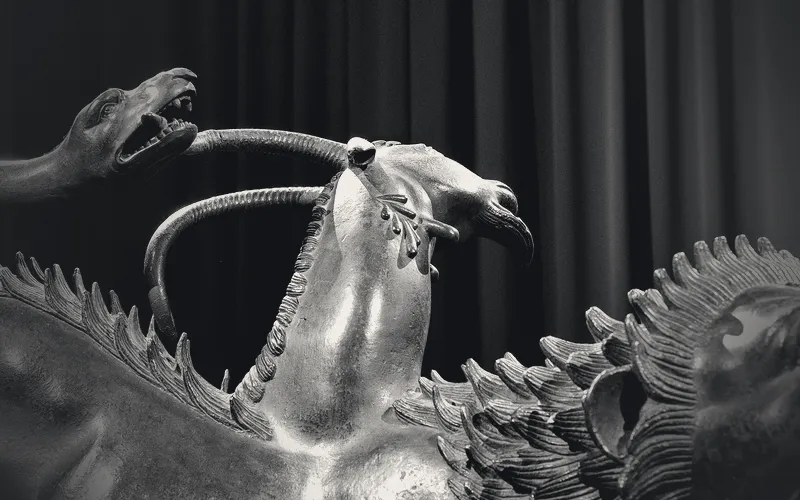
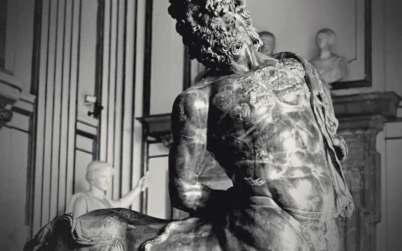
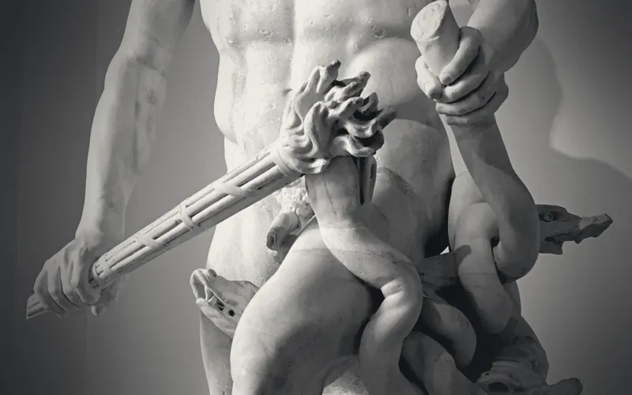
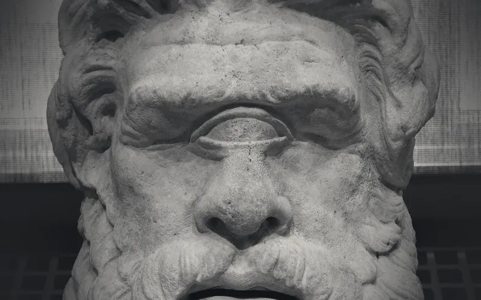

Monstros, guardiões e seres de duas naturezas. Não se assuste: eu também estou nesta lista.

Μέδουσα
A única Górgona mortal. Quem olhava para ela virava pedra.

Μινώταυρος
Metade homem, metade touro, vivia no Labirinto de Creta.

Κέρβερος
Cão que guarda o Submundo. Hesíodo fala em cinquenta cabeças; a maioria dos autores, em três.

Χίμαιρα
Cuspia fogo e tinha partes de leão, cabra e serpente.

Σφίγξ
Propunha um enigma em Tebas até Édipo resolvê-lo.

Κένταυρος
Metade homem, metade cavalo. Quíron, o mais sábio deles, educou Aquiles.

Ὕδρα
Serpente de muitas cabeças vencida por Héracles no segundo trabalho.

Σειρήν
Na arte grega, mulher com corpo de pássaro. Seu canto atraía marinheiros.

Κύκλωψ
Gigante de um olho só. Polifemo prendeu Odisseu em sua caverna.